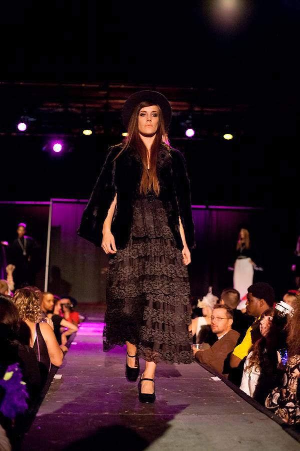
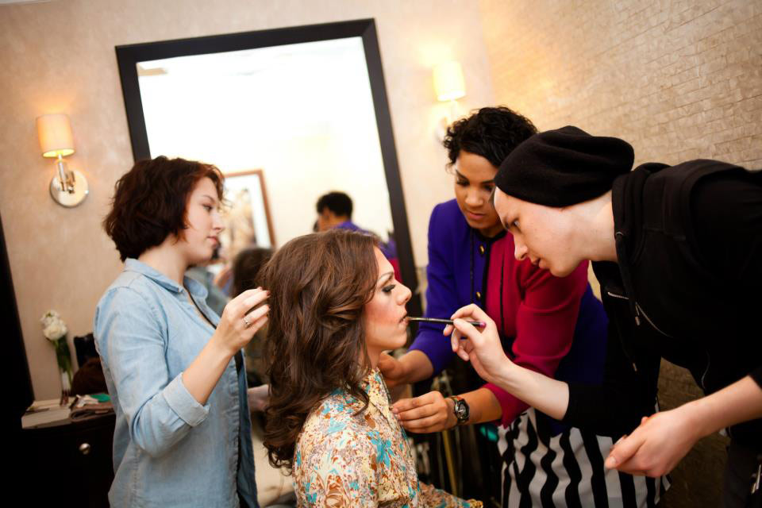

Alexis Rose
Alexis Rose is Milwaukee’s it girl when it comes to fashion. She was named "Official Stylemaker" by Fashionable Mags Milwaukee, and voted "Sexiest Professional Under 30" by DO414. She has also been Timothy Westbrook’s right hand woman when it comes to styling his fashion shows, which led her to venture off on her own as the Director of Alexis Rose Style. She was responsible for curating the entire fashion event Creatures and Creators at Turner Hall Ballroom last October, and a flawless Beyonce Viewing Party featuring wardrobes inspired by the visual album.
She has an eye for classic style with a trendy edge, something which is definitely apparent in her collaborations with other fashion names in Milwaukee, like Made in Milwaukee, The Blaq Wardrobe, and Milwaukee Alt. Big things are ahead for Rose - she is a new member of the Chanel team, and is unstoppable when it comes to creating and collaboration.
Milwaukee has always been her mission. Born and raised here, she has been focused on restoring faith in her city and is a major player in keeping the creative scene thriving and evolving.
amfm: How did you get into styling? Did you always have an interest in fashion?
alexis rose: I've always been styling one way or another. I wouldn't say that I've always had an interest in fashion per say, as much as I have always had an interest for creative expression and demonstration, one realm happening to be fashion. Whether it was when I was a kid, constantly re-arranging and re-styling my bedroom because I was bored and it was the only creative thing I had full control over; or, when I would change my outfit three times a day because my interests and moods could change so quickly; or, when I would style my friends before a night out. My style & joy for styling have always been a reflection of my personal creative expression while still implementing the creativity, mood and character of the client - the same goes for when I'm styling myself. I began professionally wardrobe styling, in MKE, the Summer of '12 when a friend and client asked me to style her for an upcoming lookbook last minute. I of course said yes, helping her select lingerie pieces from her own wardrobe, as well as doing her hair and make up. The shoot was a success, and from there I was granted the opportunity to style this same friend and client for WiSKULLSiN's Summer lookbook. I then assisted backstage at two Milwaukee fashion events and before you know it, I was launching my own style brand and blog. In the midst of it all, I met Timothy Westbrook. From there, the rest was history.
amfm: Did you ever try your hand at designing? When did you know you wanted to be a stylist?
rose: I never tried my hand at designing. I can definitely see myself being on a creative team and/or being the Creative Director on a design project, guiding and collaborating on what I think would enhance a garment, sell a garment, make the garment a one of a kind; however, I've yet to have the passionate urge to design myself. But, who knows, that could always change. With that said, I've never really known that I wanted to be a stylist. Heck, I still don't know, but, what I do know is that styling has always been an innate part of me-- a gift that I've been blessed enough to have, being a definitive and unique eye plus the creative comprehension to back it up.
amfm: What are some of your style inspirations? (be it people, things, films, an era, books, a word, you name it.)rose: I'd say that my style inspirations have been my Grandmother (over her entire lifetime), my Mom (in the 80s), MIA, Santigold, classics such as Audrey and Marilyn, Diana Vreeland, Anna Wintour, Madonna, Lady Gaga. My eye and heart for style flutter over many rivers. The same goes for eras with an emphasis on the 20s, 40s, 60s, 80s and early 90s. Words: Fresh, dope, fly, put together, carries herself well/professionally, lady, woman, cool, dork/nerd, classic, vintage. For books, honestly, the Bible has led me to love the color purple. I've never really been a big purple fan, but turns out, it represents royalty and is referenced a lot in the Bible. The Bible also speaks a lot about being well-dressed/clothed in the spirit...it's interesting.
amfm: What is your favorite thing about fashion and personal style as a whole?rose: The ability to express myself as freely as I please, because no one can stop me. No one can stop fashion. It truly is unstoppable. No one can tell your outfit to shut up, and no one needs to read a chapter to “get'” what it is that you're wearing. It's communication, all right there, in a meticulous snapshot...through a creatively well put together outfit. Even if you beg to differ, you can't help but to look, try to understand it, wish you could rock the same thing. It's much more deep than people like to give it credit for.
amfm: How would you describe your personal style?
rose: My personal style is multi-dimensional, pulling from and/or pairing with diverse eras, colors, textures, fits, shapes, tones, inspirations. One day I can be in a vintage 40's collared dress & clunky JCs, and the next in a Goodwill 80's over-sized sweater, leggings & old-school inspired Nikes... it just depends on how I'm feeling!
amfm: What is the most important thing about planning a fashion show? Is it the clothes?rose: The most important thing about planning a fashion show is the planning :) This must be on lock to get the most positive benefit out of the experience, and we can only learn and get better at that, one show at a time. For me, it's not the clothes as much as it is the creative force behind the show, including the clothes, music, lighting, staging, etc. For the Yet, the clothing must be on point as well of course, as this is why the audience is here.
amfm: Milwaukee may not be a fashion capital, but do you find Milwaukee to be fashionable, how would you describe the fashion climate in Milwaukee? How has Milwaukee cultivated your creativity?rose: I definitely find Milwaukee to be fashionable- even more so, I find it to be creative. So much so, that our city has the potential to push the fashion boundaries in a variety of unexpected ways. That's why everyone keeps paying attention. What are we all going to do next? Be inspired by next? Create next? I'd describe the fashion climate here, as far as interest, as off the charts. So much so, that it's been a bit over-heated. Especially because I feel as though our fashion climate on a credibility scale, though flourishing and exciting, is luke warm--as we have a long way to go and much to learn, see, explore, do- myself included. I think in Milwaukee, we get so excited because opportunities have been so scarce and limited, that when we see a beacon of hope we jump on it, quickly, sometimes a bit prematurely and almost suck it dry instead of savoring it, letting the creativity wave over us in slow and well thought out and well executed ways. Milwaukee has cultivated my creativity in that I essentially grew up around a lot of things that not only did I want to be better, stronger, prettier, brighter, but I could see the potential and ability of such characteristics within these things. So, it has always been in my nature to strive to find the solutions, resources, and arrangements to make it so, no matter how limited these tools may have been. I feel as though my life, in itself, in Milwaukee has always had a bit of an ugly duckling quality to it...yet, it blossoms more and more into a swan as time goes on, that's just the way this city works if and when you want it to. It is because of that, that my creativity will continue to be positively cultivated by this city, even when my time here is up.
amfm: What has been the most memorable show that you have done?rose: They've all been the most memorable because they've always been firsts of mine in one way or another, they've each been a way to grown, challenge myself and learn. My first show last January is my most memorable because it was my very first show ever, and with Timothy Westbrook, and at the Pfister. It was beyond a dream come true, professionally and personally; especially being a little mixed girl from Milwaukee. Our show at the Domes is so memorable because it was simply so enchanting and breathtaking. The show I did in July is so memorable because it was my first fashion event without Timothy; a chance to show my stuff, a bit more on my own, even though the event was in honor of him, Timothy's Paleontology of a Woman is so memorable because, duh, did you see that event? And, my event in October because it was my first Alexis Rose production, where I had complete creative and managerial responsibility. I am excited to create more memorable events this year, with many already on the books!
|  |  |
For more from Alexis Rose:
http://alexisrosenow.com
http://alexisrosestyle.tumblr.com
photo credits: Alexis Rose, Justin Bacon, Milwaukee Alt.